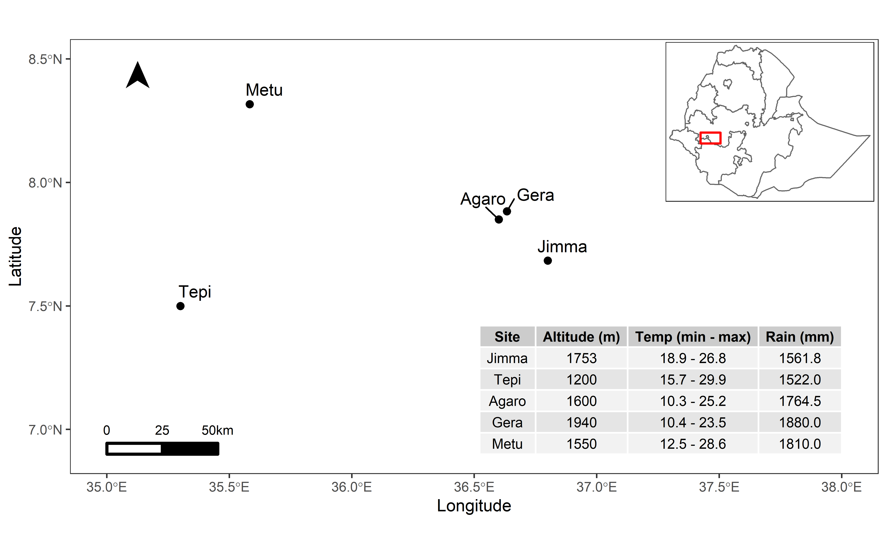

library(tidyverse)
library(knitr)
library(cowplot)
library(ggthemes)
library(sf)
library(tmap)
library(gridExtra)
library(grid)
library(ggpmisc)# CLR severity data
CLR <- read.csv("data/CLR.csv") %>%
mutate(month = factor(month, levels = c(8, 9, 10, 11, 12, 1, 2, 3, 4, 5, 6, 7)))
# CLR AUDPC data
audpc <- read_csv("data/clr_audpc.csv")
# site attributes
site_table <- read.csv("data/Sites.csv")
# Shapefile of Ethiopia
et <- sf::st_read("data/Map/Ethiopia.shp")## Reading layer `Ethiopia' from data source
## `G:\My Drive\paper-coffee-rust-curves-Ethiopia\paper-performace-of-coffee-varieties-against-leaf-rust\data\Map\Ethiopia.shp'
## using driver `ESRI Shapefile'
## Simple feature collection with 11 features and 6 fields
## Geometry type: MULTIPOLYGON
## Dimension: XY
## Bounding box: xmin: -162404.5 ymin: 375657.9 xmax: 1491092 ymax: 1641360
## Projected CRS: Adindan / UTM zone 37N# Shapefile of study sites
sites <- sf::st_read("data/Map/CLR_Sites.shp")## Reading layer `CLR_Sites' from data source
## `G:\My Drive\paper-coffee-rust-curves-Ethiopia\paper-performace-of-coffee-varieties-against-leaf-rust\data\Map\CLR_Sites.shp'
## using driver `ESRI Shapefile'
## Simple feature collection with 5 features and 6 fields
## Geometry type: POINT
## Dimension: XY
## Bounding box: xmin: 35.3 ymin: 7.5 xmax: 36.8 ymax: 8.316667
## Geodetic CRS: WGS 84tab <- site_table%>%
dplyr::select(-Longitude, -Latitude) %>%
rename(`Altitude (m)` = Altitude..m.,
`Temp (min - max)` = T.oCÿ.min...max.,
`Rain (mm)` = Yearly.rain..mm.)
tablibrary(gt)
site_table%>%
dplyr::select(-Longitude, -Latitude) %>%
gt() %>%
cols_label(
Altitude..m. = html("Altitude <br> (m)"),
T.oCÿ.min...max. = html("Temp°C <br> (min - max)"),
Yearly.rain..mm. = html("Yearly rain <br> (min - max)")
) %>%
cols_align(align = "center")| Site | Altitude (m) |
Temp°C (min - max) |
Yearly rain (min - max) |
|---|---|---|---|
| Jimma | 1753 | 18.9 - 26.8 | 1561.8 |
| Tepi | 1200 | 15.7 - 29.9 | 1522.0 |
| Agaro | 1600 | 10.3 - 25.2 | 1764.5 |
| Gera | 1940 | 10.4 - 23.5 | 1880.0 |
| Metu | 1550 | 12.5 - 28.6 | 1810.0 |
clr_region = st_bbox(c(xmin = 35.3, xmax = 36.8,
ymin = 7.5, ymax = 8.316667),
crs = st_crs(sites)) %>%
st_as_sfc()# Map of Ethiopia
inset <- tm_shape(et) +
tm_borders() +
tm_shape(clr_region) +
tm_borders(lwd = 2, col = "red")
# CLR study sites
ggplot() +
geom_sf(data = sites, col = 1, size = 2) +
coord_sf(xlim = c(35, 38), ylim = c(6.9, 8.5)) +
ggrepel::geom_text_repel(data = sites, aes(x = Longitude, y = Latitude, label = Site), nudge_y = 0.1, nudge_x = 0.1) +
theme_bw() +
theme(panel.grid = element_blank()) +
labs(x = "Longitude", y = "Latitude", fill = "") +
ggsn::north(location = "topleft", scale = 0.25, symbol = 12,
x.min = 35, x.max = 36, y.min = 8, y.max = 8.5) +
ggsn::scalebar(location = "bottomleft", dist = 25,
dist_unit = "km", transform = TRUE,
x.min=35, x.max=38.5, y.min=6.9, y.max=8,
st.bottom = FALSE, height = 0.04,
st.dist = 0.05, st.size = 3) +
annotate(geom = "table", x = 38, y = 6.9, label = tab)
# Combining both maps
print(inset, vp = viewport(0.868, 0.78, width = 0.3, height = 0.3))
sites <- c("Metu", "Agaro", "Jimma", "Tepi", "Gera")
# Severity
p1 <- CLR %>%
mutate(Farm = recode(site, "agaro" = "Agaro", "gera" = "Gera", "jimma" = "Jimma",
"metu" = "Metu", "tepi" = "Tepi")) %>%
group_by(year, month, Farm, variety) %>%
summarise(sev = mean(severity)) %>%
ungroup() %>%
mutate(Farm = factor(Farm, levels = sites)) %>%
ggplot() +
geom_line(aes(x = (month), y = sev, group = variety), colour = "grey") +
stat_summary(aes(x = as.integer(month), y = sev), fun = "mean", geom = "line", size = 1) +
labs(x = "Month", y = "Mean severity (%)", subtitle = "(A)") +
facet_grid(Farm~year)
p1p2 <- audpc %>%
mutate(site = recode(site, "agaro" = "Agaro", "gera" = "Gera", "jimma" = "Jimma",
"metu" = "Metu", "tepi" = "Tepi")) %>%
group_by(site, variety) %>%
summarise(AUDPCm_mean = mean(AUDPCm, na.rm = TRUE)) %>%
ungroup() %>%
ggplot(aes(x = reorder(site, AUDPCm_mean), y = AUDPCm_mean)) +
geom_boxplot(alpha = 0) +
geom_jitter(position = position_jitter(0.1)) +
labs(x = "Location", y = "mean AUDPC", subtitle = "(B)") +
coord_flip()
p2library(patchwork)
p1 <- p1 +
theme(strip.text.y = element_blank())
p2 <- p2 +
theme(axis.title.y = element_blank())
p1 + p2 +
plot_layout(widths = c(2, 1))# Specific months to select data for
months <- c("October", "November", "December")
# Plot
audpc %>%
mutate(site = recode(site, "agaro" = "Agaro", "gera" = "Gera", "jimma" = "Jimma",
"metu" = "Metu", "tepi" = "Tepi")) %>%
gather(Month, Severity, `1`:`12`, na.rm = TRUE, convert = TRUE) %>%
mutate(Month = recode(Month, `1` = 8, `2` = 9, `3` = 10, `4` = 11,
`5` = 12, `6` = 1, `7` = 2, `8` = 3,
`9` = 4, `10` = 5, `11` = 6, `12` = 7)) %>%
group_by(year, Month, site, variety) %>%
summarise(Severity_mean = mean(Severity, na.rm = TRUE),
AUDPCm_mean = mean(AUDPCm, na.rm = TRUE)) %>%
ungroup() %>%
group_by(year,site, variety) %>%
slice_max(Severity_mean, n = 3) %>%
ungroup() %>%
filter(Month %in% c(10, 11, 12)) %>%
mutate(Month = recode(Month, `10` = "October", `11` = "November", `12` = "December")) %>%
mutate(Month = factor(Month, levels = months)) %>%
ggplot(aes(log(Severity_mean), log(AUDPCm_mean))) +
geom_smooth(method = "lm", colour = "black", se = FALSE) +
geom_point(aes(color = factor(year)), alpha = 0.5) +
labs(x = "log(Mean Severity)", y = "log(Mean AUDPC)", color = "Year") +
theme(legend.position = "right") +
facet_grid(site ~ Month)